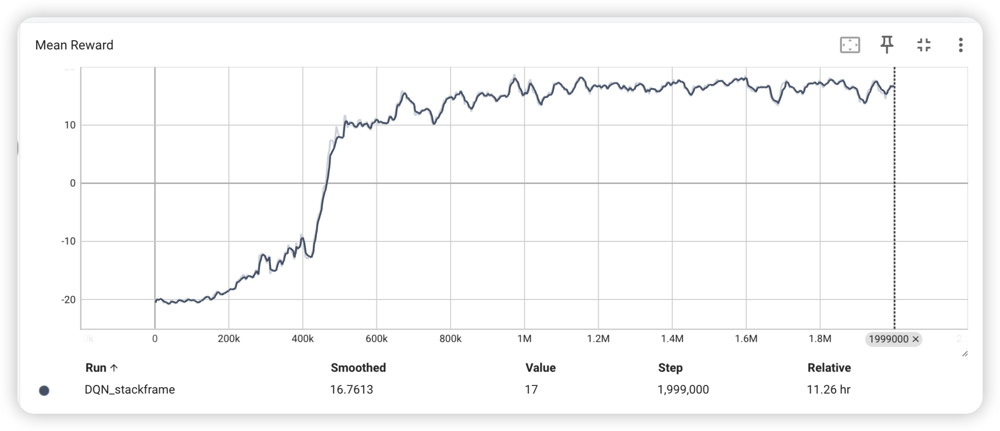
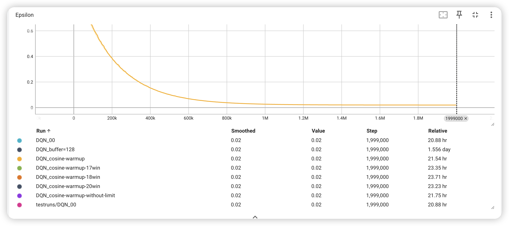
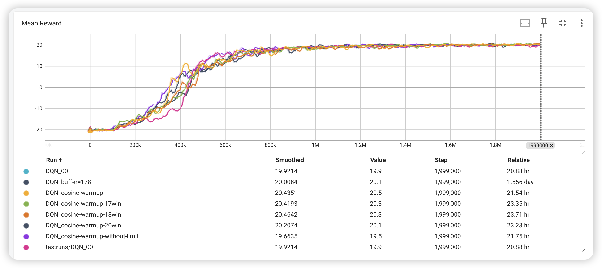
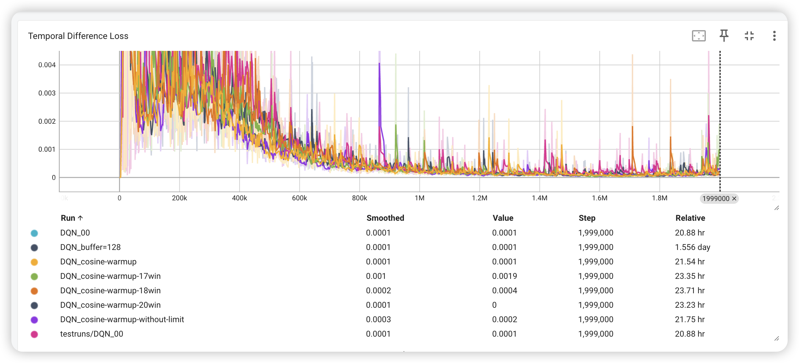

DQN experiment: Pong
DQN theory and practice
detect0503@gmail.com
original paper: Playing Atari with Deep Reinforcement Learning
Abstract
This is a simple experiment to train a DQN agent to play atari game Pong. This paper proposes a novel approach, directly using the entire game screen as input for the model. The model autonomously determines what features to extract, and even the specific features it learns are not of primary concern. What matters is that the model can make correct actions in various states, and we don’t necessarily need to know the exact features it has learned.
Introduction
Since traditional reinforcement learning algorithms are not suitable for high-dimensional state space, the DQN algorithm is proposed to solve this problem. The DQN algorithm uses a deep neural network to approximate the Q function, and uses experience replay and target network to stabilize the training process. The DQN algorithm has achieved good results in many atari games, and has become a milestone in the field of reinforcement learning.
Our goal is to train a DQN agent who can play atari game Pong. The agent will receive a reward of +1 if it wins the game, and a reward of -1 if it loses the game. The whole game lasts for at most 21*2-1 =41 turns. The higher the score, the better the agent’s performance.(in fact, if we finally win the contest, we will get a reward of +1, otherwise, we will get a reward of -1. And we won’t gain anything unless the contest is done. In this way, our agent can play different games better with the same algorithm framework.)
In this article, I’ll reproduce the DQN algorithm and analyze why it works compared to traditional reinforcement learning algorithms.
Related work
- some traditional table based reinforcement learning algorithms
drawbacks: can’t handle high-dimensional state space
- with some prior knowledge
drawbacks: won’t be a method that can be used in a wide range of games
- TD-Gammon approxiate the state value function rather than the action value function
drawbacks: slow and not SOTA
- on-policy methods
Let’s not discuss it for now
Method on paper
Apporximate Q-function
Most of the time, the state space of the environment is too large to store the Q function in a table. Therefore, we need to use a function approximator to approximate the Q function. In the DQN algorithm, the Q function is approximated by a deep neural network. The input of the neural network is the state of the environment, and the output is the Q value of each action.
Sometimes, it’s hard to map the game into a fixed-size state space. Since using histories of arbitrary length as inputs to a neural network can be difficult, our Q-function instead works on fixed length representation of histories produced by a function . The function takes the last 4 frames and stacks them to produce a 4x84x84 image.
In summary, our network takes a stack of 4 frames as input and outputs a Q value for each action.
In previous work, there are some methods taking the advantage of DL as well. All of these methods involve manually extracting features while simultaneously separating the background (somewhat like to dividing 128 colors into 128 layers and then annotating what each color represents). Although this approach is effective for Atari games where different colors typically correspond to different categories of objects, DeepMind chose a different approach. They opted for the neural network to autonomously learn how to separate the background from game objects rather than relying on manual feature extraction.
Experience replay
The experience replay is a technique that stores the agent’s experiences in a replay buffer, and then samples a batch of experiences from the replay buffer to train the neural network. The experience replay can break the correlation between the experiences, and stabilize the training process. Pay attention that experience replay is a off-policy method.
The correctness of experience replay is based on the assumption that the experiences are independent and identically distributed, similar to the stochastic gradient descent.
With experience replay,
- the agent can learn from the same experience multiple times, which means data can be reused efficiently and easing the problem of loss of experience data.
- The experience replay can break the correlation between the experiences, and stabilize the training process.
(what’s more, we can introduce the concept of priority experience replay, which can be used to sample the experiences with higher TD error, and thus improve the training efficiency.)
Design of the loss function
The loss function of the DQN algorithm is the mean squared error between the Q value predicted by the neural network and the Q value calculated by the Bellman equation. The loss function is defined as follows:
where is denoted as the target Q value, and is calculated by the Bellman equation:
Since it’s off-policy methods, we set policy to be the , asuring that the agent can explore the environment.
(One more thing to mention is that the target Q value is calculated by the target network, which is a copy of the Q network. The target network is updated by the Q network every steps. In this way, the overstate problem can be eased.)
Experiment
data preprocessing
Working directly with raw Atari frames, which are 210 × 160 pixel images with a 128 color palette,can be computationally demanding.
The raw frames are preprocessed by first converting their RGB representation to gray-scale and down-sampling it to a 110×84 image.
The final input representation is obtained by cropping an 84 × 84 region of the image that roughly captures the playing area.
the function from algorithm 1 applies this preprocessing to the last 4 frames of a history and stacks them to produce the input to the Q-function.
network architecture
When describing a neural network, the hierarchical structure is typically built from the input layer to the output layer. Here is the hierarchical structure of the aforementioned DQN model:
- Input Layer:
- Number of input channels for the input images:
in_channels, defaulted to 4, representing the stacking of the latest 4 frames of images.
- First Convolutional Layer (
self.conv1):
- Input channels:
in_channels(same as the input layer) - Output channels: 32
- Convolutional kernel size: 8x8
- Stride: 4
- Output size: Calculated through the convolution operation
- Second Convolutional Layer (
self.conv2):
- Input channels: 32 (from the output of the first convolutional layer)
- Output channels: 64
- Convolutional kernel size: 4x4
- Stride: 2
- Output size: Calculated through the convolution operation
- Third Convolutional Layer (
self.conv3):
- Input channels: 64 (from the output of the second convolutional layer)
- Output channels: 64
- Convolutional kernel size: 3x3
- Stride: 1
- Output size: Calculated through the convolution operation
- Fully Connected Layer (
self.fc4):
- Input size: Flattening the output of the convolutional layers into a one-dimensional vector (
7 * 7 * 64) - Output size: 512
- Output Layer (
self.fc5):
- Input size: 512 (from the output of the fully connected layer)
- Output size:
num_actions(representing the values for each possible action)
DQN experiment details
This is a simple experiment to train a DQN agent to play atari game Pong. I attempt to use the same hyperparameters as the original DQN paper. Unfortunately, I’m not familar with the usage of the atari environment api in atari game and pytorch. However, I implemented the DQN algorithm with the help of Chatbot.
requirements
python 3.10
gym 0.23.0
pytorch 2.2.0
pytorch-cuda 11.8
pytorch-mutex 1.0
torchaudio 2.2.0
torchtriton 2.2.0
torchvision 0.17.0
game
PongNoFrameskip-v4
Performance
1 | gamma = 0.99 |
use the hyperparameter above to train the agent, and the result is as follows:

it only gains 16.7 out of 21, seeming that the agent is not good enough.
So I tried to change the hyperparameter, and added some techniques.
- -greedy, descending so quickly, which means the agent can’t explore the environment enough. So I made descending more slowly, while making the terminal smaller.
1 | epsilon_max = 1 |
- larger replay buffer
1 | batch_size = 64 # 增加了经验回收容量 |
- adjust the optimizer and add warm-up scheduler
1 | self.optimizer = optim.AdamW(self.DQN.parameters(), lr=lr, weight_decay=0.01) |
- cancel the gradient clip
1 | #for param in self.DQN.parameters(): |
Ultimately, the agent can gain 20.1 out of 21, which is a good result.


